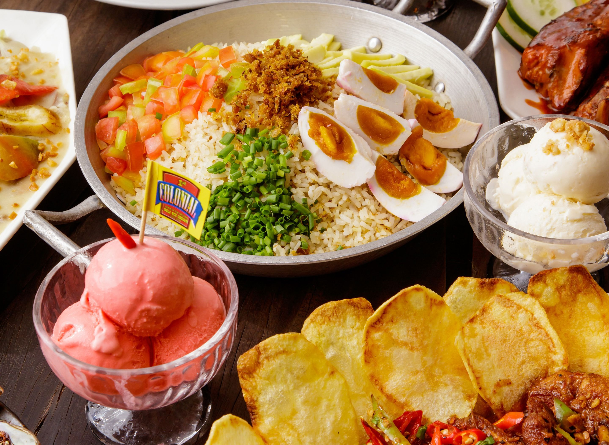
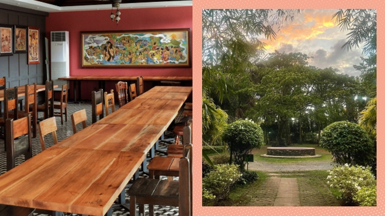

1st Colonial Grill
One of the most popular local food restaurants in Albay, known for serving authentic Bicol dishes and their famous sili ice cream.
- Location: Legazpi City, Albay
- Specialty: Bicol Express, Laing, Sili Ice Cream
- Price Range: ₱300 - ₱600
Best For: Visitors who want to try classic Bicol flavors in one of the best-known local restaurants in Legazpi.
How to Find: Search "1st Colonial Grill Legazpi City Albay" on Google Maps or ask for directions in the city proper.

Small Talk Café
A favorite dining place in Albay that offers a mix of local flavors, comfort food, and a cozy atmosphere for visitors.
- Location: Legazpi City, Albay
- Specialty: Pasta, rice meals, local-inspired dishes
- Price Range: ₱200 - ₱500
Best For: Travelers who want a cozy restaurant with comfort food and familiar local favorites after sightseeing.
How to Find: Search "Small Talk Cafe Legazpi City Albay" on Google Maps or ask drivers near the city center.

Casa Soriano
A nice place to enjoy Filipino meals and local dishes in a warm and comfortable setting.
- Location: Legazpi City, Albay
- Specialty: Filipino dishes and local meals
- Price Range: ₱2000 - ₱3000
Best For: Family meals, casual celebrations, and visitors who want a fuller sit-down dining experience.
How to Find: Search "Casa Soriano Legazpi City Albay" on Google Maps or ask nearby establishments in Legazpi.

Bicolano Food House
A simple local dining spot where visitors can enjoy classic Bicol dishes and traditional home-style meals.
- Location: Tabaco City, Albay
- Specialty: Pinangat, Bicol Express, local viands
- Price Range: ₱150 - ₱400
Best For: Visitors who want affordable local dishes while exploring Tabaco City and nearby attractions.
How to Find: Search "Bicolano Food House Tabaco City Albay" on Google Maps or ask for local food spots near the city center.

Traditional Eatery
A budget-friendly place where tourists can try local dishes and experience the everyday flavors of Albay.
- Location: Ligao City, Albay
- Specialty: Affordable local meals
- Price Range: ₱20 - ₱100
Best For: Budget-conscious travelers who want simple daily meals and easy-to-find Filipino dishes.
How to Find: Search for local eateries in Ligao City on Google Maps or ask tricycle drivers for popular budget food stops.

Local Delicacies Corner
A good stop for visitors who want to taste traditional delicacies and discover more of Albay’s food culture.
- Location: Daraga, Albay
- Specialty: Native delicacies and snacks
- Price Range: ₱10 - ₱100
Best For: Buying quick local pasalubong, native snacks, and delicacies before heading to other tourist spots.
How to Find: Search for delicacy shops in Daraga on Google Maps or ask hotel staff for popular pasalubong areas.